Free · Chrome and Edge · for Zendesk support teams
Find what your docs don't answer yet.
Open a ticket, click the extension, and see which help articles match the question and which needs have weak or no coverage. It runs in your browser. No AI, and the ticket text never leaves the tab.
Three steps, about five minutes
Index your docs
Enter your documentation homepage. The app reads the public articles and keeps a searchable copy.
Connect the extension
Install it in Chrome or Edge, then type the six-digit code from the app. The connection is read-only.
Scan a ticket
Open a Zendesk ticket and press Scan ticket. Results appear in three groups.

Leads, not verdicts
📚 Relevant documentation
Articles whose words overlap with the question, with the matching passage and an Open article button.
🕳️ Potential gaps
Needs with weak or no coverage. Always worded as potential: a score shows word overlap, not proof.
💡 Suggested improvements
Wording that could be added to an existing article.
🚦 Toolbar status icon
Green, yellow, red or gray at a glance, before you even open the popup.
👍 Train it
Agents press Real gap or Not a gap. Owners approve, dismiss or link the article that covers it.
👥 Teams
Owners and members, invitations, and restricted sources that only the right people see.
The ticket stays with you
- Ticket text never leaves your browser. It is read, matched and discarded there.
- No AI. Matching is fixed word comparison, so the same ticket always gives the same result.
- Sending needs a click. When you mark a gap, the card shows exactly which filtered key words are sent. Nothing goes until you press the button.
- Read-only. The extension gets a read-only copy of the documentation you may see. It cannot change anything.
- Connections expire after 30 days and can be revoked at any time.
What it does not do
- It compares wording. Different words for the same idea look like a gap unless you add them to the vocabulary.
- It reads only what is loaded on screen. Scroll to load earlier messages, then scan again.
- It works with Zendesk first. Other helpdesks are not supported yet.
- The extension is not in a store yet. You install it from the app, and the guide walks through it.